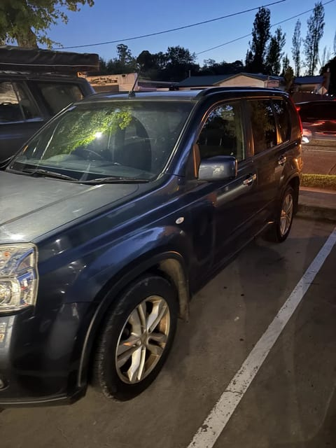
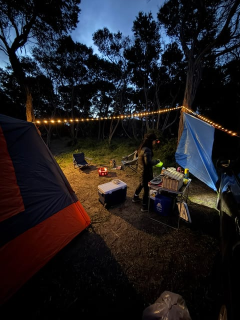
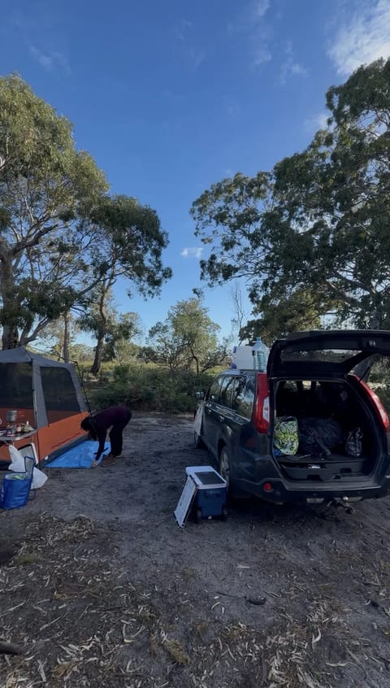
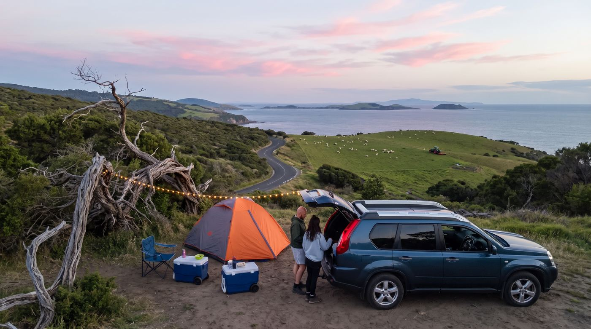
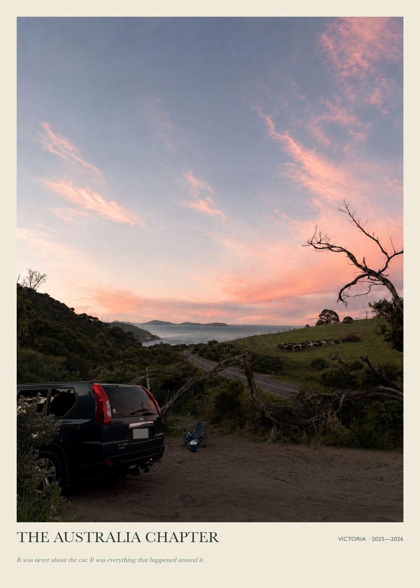

The Australia Chapter
Nissan X-Trail
Des week-ends de camping, des kilomètres à deux, et le début d’une nouvelle vie de l’autre côté du monde.
Une œuvre personnalisée, créée à partir de ta voiture et de son histoire.
Envoie quelques photos de ta voiture et l’histoire qu’il y a derrière. On la transforme en une œuvre qui capture ce qu’elle représente pour toi, pas seulement à quoi elle ressemble.
Créer mon Car Chapter
Quelques photos de ton téléphone suffisent. Voici ce qu’elles deviennent.




Nissan X-Trail
Des week-ends de camping, des kilomètres à deux, et le début d’une nouvelle vie de l’autre côté du monde.
Škoda Octavia
La première voiture à son nom, la liberté des premiers trajets seul, et les petites habitudes du quotidien.
Deux histoires pilotes, réalisées avant l’ouverture des commandes et publiées avec l’accord de leurs propriétaires.
Quelques photos et quelques questions sur ta voiture, ce qu’elle représente pour toi et les souvenirs qui y sont liés.
Tes photos, tes souvenirs et tes petits détails deviennent une scène originale et personnelle, en veillant à ce que ce qui doit rester vrai le reste.
Tu découvres ton œuvre lors d’un Reveal privé : une présentation pensée pour la découvrir comme un moment, pas comme un simple fichier joint. Tu reçois ensuite ton fichier final.
49 €
Tarif de lancement
Un tarif pilote pour les premiers Car Chapters, pendant que nous affinons l’expérience avec de vrais clients.
Créer mon Car ChapterSous 3 jours ouvrés à partir de la réception de tes photos et de tes réponses.
Ça dépend des photos disponibles : la fidélité d’un visage n’est jamais garantie à l’avance. Dans le doute, la composition privilégie ta voiture et ton histoire plutôt qu’un visage approximatif.
Une erreur factuelle de notre part est corrigée sans toucher à ta révision, lorsque tes photos permettaient raisonnablement de l’éviter. Une révision créative est incluse si tu veux ajuster une préférence.
Oui. Une impression est disponible en option, sur demande. Formats et tarifs sont communiqués une fois ton œuvre validée.
Chaque Car Chapter commence par une histoire.
Quelques questions sur ta voiture et ce qu’elle représente, puis tes photos. Prends le temps qu’il te faut.